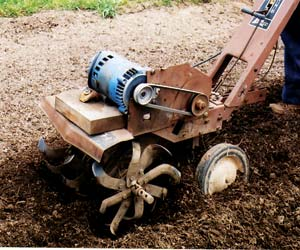

I assembled an electric rototiller using an old front-end rototiller that had a blown engine and a half-horsepower electric motor from a small air compressor. I just wanted a little tiller to use in my small backyard garden; I have two larger rototillers for my larger gardens. But this little tiller has become a favorite gardening tool.
I have become attached to this homemade tiller because it’s handy for small jobs, and is very functional on the shredded leaves that I chop up in the fall. It’s lightweight, easy to handle - even with the extension cord - and does not dig as deeply into wet soil as a heavier tiller would.
In the fall of 2005, I had a pile of chopped leaves 2 1/2 feet deep in my small garden. This many leaves usually won’t decompose until late spring or early summer. But I ran the small tiller over the leaves in January, they composted faster, and the soil was ready to plant by mid-April.
To increase the power, I took one group of tines off the homemade tiller. I used a half-horsepower motor, but in retrospect I would recommend one that’s three-quarter horsepower for more power. I am immensely pleased with my homemade tool.
|
 DAVID BERGER This lightweight, homemade electric garden tiller is great for working leaves into garden beds. |
|
|